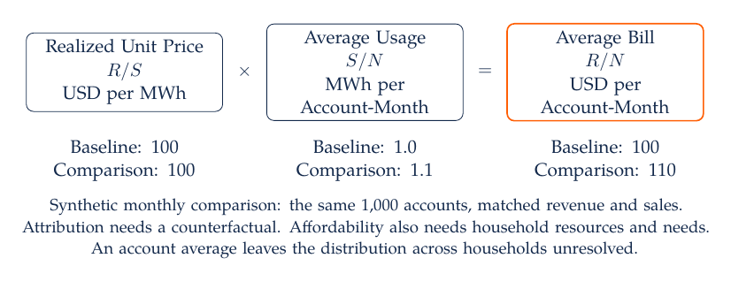
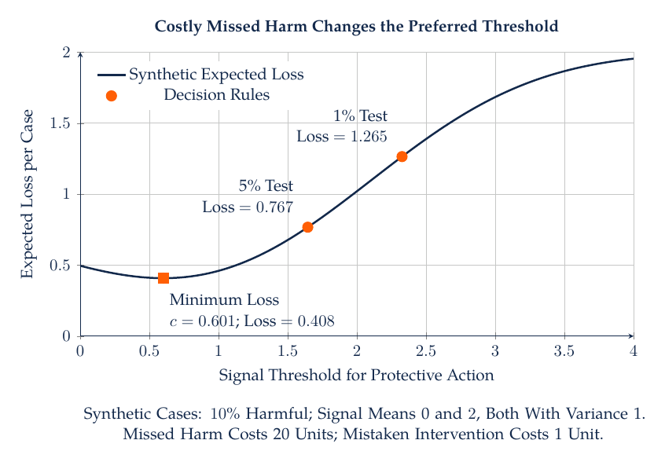

Electricity Case · M2, M6, M9
Price, Bills,
and the Claim
A utility reports an unchanged average electricity price. What would justify reassuring households about their bills?
An average price answers a question about revenue per unit sold. The average bill also depends on how much electricity each account uses. A claim about harm introduces further questions about causation, affordability, and who bears the burden.
The same 1,000 accounts appear in both scenarios. Baseline revenue is USD 100,000, sales are 1,000 MWh, and the average bill is USD 100 per account-month. These inputs illustrate an accounting relation; they are not estimates from the data-center paper.
Predict and Calculate
Can the Bill Change?
Hold the baseline fixed. Choose a comparison price and usage, then predict the direction of the average bill before revealing it.
Your response stays in this page and clears when you reload. No response is submitted or graded.
Inspect the Reasoning
Keep the Object Fixed
At USD 100 per MWh, average usage of 1 MWh gives a USD 100 bill. Increasing average usage to 1.1 MWh gives a USD 110 bill at the same realized unit price. Revenue and sales rise together while their ratio stays fixed.
The calculation concerns matched account averages. Different households can bear different burdens. Household resources, essential needs, and available alternatives enter an affordability judgment.
Let R be monthly revenue in USD, S monthly sales in MWh, and N the matched account-month count for the same customer class.
(R / S) × (S / N) = R / N
Realized price × average usage = average revenue per account-month. The units MWh cancel. Revenue and sales must use the same period, class, and accounting coverage. A tariff's marginal rate may differ from realized revenue per MWh.
The default comparison is USD 100/MWh × 1.1 MWh/account-month = USD 110/account-month.

Attribution needs a counterfactual. Affordability additionally requires household resources and needs. The diagram preserves these separate questions.
Open Diagram at Full Size · Editable TikZ Source
This complete standard-library program reads the saved synthetic bill table and verifies the accounting identity. Run it from a course checkout.
python3 03_Data_and_Code/Learning_Design/bill_identity.pyRead the Complete Python
"""Recompute the existing synthetic bill table without external dependencies."""
import csv
from fractions import Fraction
from pathlib import Path
HERE = Path(__file__).resolve().parent
INPUT = HERE.parent / "Statistical_Inference/results/institutional_bills.csv"
def bill_from_units(price, use):
"""USD/MWh times MWh per account-month gives USD per account-month."""
p, q = Fraction(str(price)), Fraction(str(use))
if p < 0 or q <= 0:
raise ValueError("Nonnegative price and positive usage required")
return p * q
def comparisons():
with INPUT.open() as f:
rows = list(csv.DictReader(f))
results = []
for row in rows:
revenue = Fraction(row["revenue_usd"])
sales = Fraction(row["sales_mwh"])
count = Fraction(row["customer_months"])
if sales <= 0 or count <= 0:
raise ValueError("Positive sales and account-month counts required")
price, use = revenue / sales, sales / count
bill = bill_from_units(price, use)
assert bill == revenue / count
results.append({"scenario": row["scenario"],
"price_usd_mwh": float(price),
"use_mwh_account_month": float(use),
"bill_usd_account_month": float(bill)})
return results
def main():
rows = comparisons()
assert [r["bill_usd_account_month"] for r in rows] == [100, 110, 100]
out = HERE / "results"
out.mkdir(exist_ok=True)
with (out / "bill_reference.csv").open("w", newline="") as f:
writer = csv.DictWriter(f, fieldnames=list(rows[0]))
writer.writeheader()
writer.writerows(rows)
for row in rows:
print(row)
if __name__ == "__main__":
main()
Download Python · Download Inputs · Download Checked Results
Challenge the Claim
Which Premise is Missing?
Suppose someone says: “The average price did not rise, so households experienced no harm.” Separate the proposed inference into three questions.
Measurement
Does the recorded outcome represent expenditure, affordability, or another object? The bill identity supplies a counterexample to treating the unit price as the complete expenditure measure.
Causation
What would household expenditure have been without the data-center project? A higher observed bill alone leaves this counterfactual unresolved. Project commitments, cost allocation, and timing require institutional evidence.
Justification
Which burdens count, whose reasons deserve consideration, and what protection would be justified? An average does not establish how the costs are distributed or settle an “ought” conclusion.
A Defensible Revision
The reported average-price result addresses the specified measured outcome under its design and uncertainty. Broader reassurance requires evidence connecting that outcome to household expenditure and incidence, a credible causal comparison, and a justified standard for relevant burdens.
The original study explicitly defines its realized-revenue measure. The criticism targets an extension beyond the supported inference. Actual harm, control contamination, or deliberate deception each requires its own evidence.
Evidence and Action
Who Bears Uncertainty?
A household representative may have credible evidence of a cost-recovery mechanism without a precise causal estimate of the bill effect. Seeking records, using a temporary safeguard, and imposing a remedy are different actions. Their burdens and evidentiary requirements differ. Continued exposure also has consequences.
Ten percent of hypothetical cases are harmful. Signals have normal distributions with means zero and two and variance one. Correct decisions have zero loss. When missed harm costs twenty comparable units and mistaken intervention costs one, a five-percent test gives expected loss 0.767 per case; the minimum-loss threshold gives 0.408.
Reversing these costs changes the preferred signal cutoff from 0.601 to 3.596. The calculation estimates no actual household harm and supplies no legal proof threshold.

Which electricity records would justify an inquiry? What would justify a more restrictive action? State whose burdens enter the comparison, the normative premise supporting protection, and what would change the conclusion.
Reasoning Criteria for the Action
A p-value is distinct from a posterior probability of harm. A sum of losses also leaves open whether a person's serious burden is reasonably justifiable. Match the evidence to the proposed action, its authority, and its consequences; preserve contrary records and a review process.
Complete Python and Results · Open Figure at Full Size · Editable TikZ · Optional Practice

The derivation and opposing cost specification appear in M6 §§6.44–6.45. The institutional argument and sources appear in M9 §§9.56–9.59.
Transfer the Argument
What Would Change Your Conclusion?
Consider a subscription whose advertised monthly rate stays fixed while a customer pays for more months or services. Identify the price, quantity, expenditure, and decision rights. Which parts of the electricity argument transfer? Which contractual facts need a new investigation?
Reasoning Criteria
A supported response preserves units and timing, distinguishes a possible mechanism from an established effect, and identifies a credible comparison. It states a normative premise when recommending conduct, considers the strongest reply, and names evidence or reasons that would change the conclusion.
A student may defend a different policy recommendation. Agreement with a preferred conclusion supplies no substitute for those reasons.
Sources and Downloads